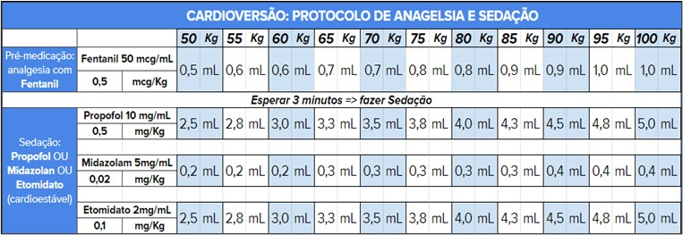
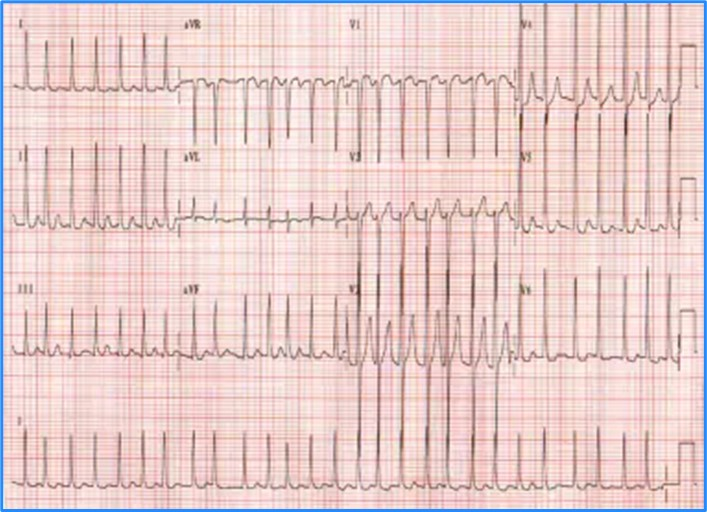
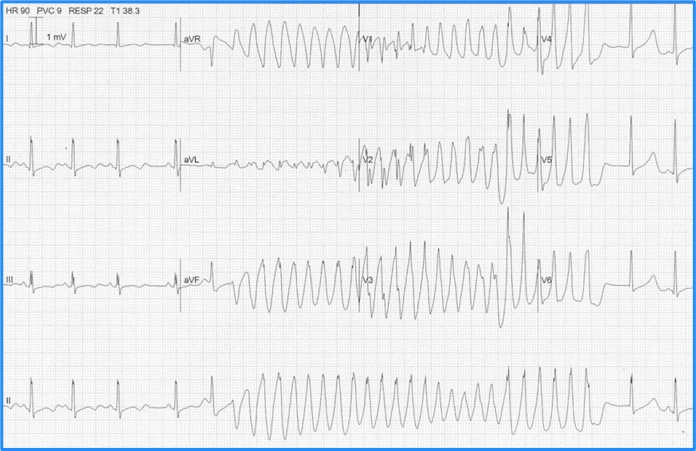
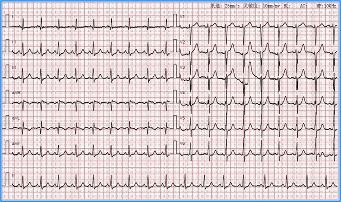
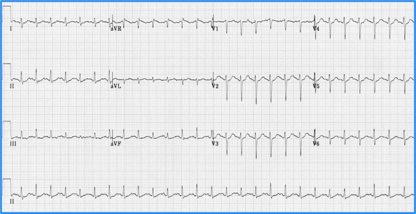

CARDIOVERSÃO ELÉTRICA: Taquiarritmia com Instabilidade*
Fibrilação Atrial, Flutter Atrial
Taquicardia Supraventricular (Reentrada Nodal)
Taquicardia Atrial
TV Monomórfica
Observações importantes
TV polimórfica deve ser realizada a Desfibrilação
Frequência cardíaca: em geral quando a causa da instabilidade é a arritmia,
a FC > 150 bpm. Se FC < 150 bpm, deve considerar a possibilidade de arritmia
crônica e outras causas associadas (dor, sepse, desidratação, febre, etc.)
Critérios de Instabilidade* na Arritmia Cardíaca (pelo menos 1): 5D
Dor torácica: dor anginosa (não confundir com palpitação)
Dispneia: congestão pulmonar (ICC, EAP)
Dessaturação
Diminuição Nível De Consciência
Diminuição da Pressão Arterial ( má perfusão): Hipotensão (PAM < 65 mmHg), Choque
ATENÇÃO:
Não confundir Cardioversão com Desfibrilação: escolher a função de
Cardioversão no Desfibrilador
Alterações crônicas: um paciente com Taquiarritmia pode ter alterações
crônicas (ex. DPOC com SatO2 < 90%) que nem sempre devem ser
consideradas como critério de instabilidade
PROTOCOLO O.S.A.S.C.O.
Orientar: explicar ao paciente e preparar equipe
Sedação (subdoses em relação à Intubação):
Pré-medicação: analgesia com Fentanil 0,5 mcg/kg
Sedação: Etomidato 0,1mg/kg OU Midazolam 0,1 mg/kg OU Propofol 0,5 mg/kg.

Ambuzar: fornecer O2 ao paciente, deixar preparado KIT IOT (se necessário)
Sincronizar: apertar o botão Sinc (Sincronizar) do Desfibrilador: choque será disparado em
cima
do QRS => evita que o choque caia ’em cima’ da onda T (fenômeno chamado de ‘R sobre T’) que
pode levar a arritmia como FV.
Flutter e Taqui Supraventricular: 50-100 J
TV Monomórfica: 100J
Fibrilação Atrial (FA): 120 J
Chocar:
Colocar gel nas pás: posicionamento das pás (HTD: infraclavicular D; HTE: ictus/precordial)
Afastar todos => Carregar => Chocar
Observar:
Não reverteu => chocar novamente com maior energia (200 J por exemplo)
Degenerou para FV => Desfibrilação (sem sincronizar!) 200 J => ACLS (RCP)
Guia prático de ECG
Fibrilação Atrial
ECG Fibrilação Atrial: FC 168 bpm (resposta ventricular)

ECG Fibrilação Atrial: FC 168 bpm (resposta ventricular)
ECG TV Polimórfica: secundária à hipocalemia (neste caso deve ser tratado o distúrbio
hidroeletrolítico e se instabilidade => DESFIBRILAÇÃO)
 DESFIBRILAÇÃO)">
Taquicardia Sinusal
Taquicardia Sinusal: sem indicação de Cardioversão. Causas: ansiedade, dor, infecção, TEP.


Fontes
O USO DE DROGAS VASOATIVAS EM TERAPIA INTENSIVA. Medicina, Ribeirão Preto, SimpÛsio:
MEDICINA INTENSIVA: I. INFECÇÃO E CHOQUE 31: 400-411, jul./set. 1998
Vasopressores e inotrópicos na Sala de Urgência. Revista Qualidade HC. FMRP-USP
Terapia Intensiva: hemodinâmica/ Elias Knobel: Editora Atheneu.
Bernoche C, Timerman S, Polastri TF, Giannetti NS, Siqueira AWS, Piscopo A et al. Atualização da
Diretriz de Ressuscitação Cardiopulmonar e Cuidados de Emergência da Sociedade Brasileira de
Cardiologia – 2019. Arq Bras Cardiol. 2019; 113(3):449-663
Inotropes and Vasopressors; Circulation. 2008; 118: 1047-1056.
Tintinalli’s Emergency Medicine Manual, 8th Edition. Rita K. Cydulka, David M. Cline, O. John Ma
Link MS, Berkow LC, Kudenchuk PJ, Halperin HR, Hess EP, Moitra VK , et al. Part 7: Adult Advanced
Cardiovascular Life Support: 2015 American Heart Association Guidelines Update for
Cardiopulmonary Resuscitation and Emergency Cardiovascular Care. Circulation 2015 Nov;132(18
Suppl 2):S444-64.
John M. Field, et al. 2010 American Heart Association Guidelines for Cardiopulmonary Resuscitation
and Emergency Cardiovascular Care. Circulation. November 2, 2010, Volume 122, Issue 18 supply
Guy S Reeder, MDHarold L Kennedy, MD, MPH. Overview of the acute management of ST-elevation
myocardial infarction. UpToDate. Literature review current through: Aug 2022. | This topic last
updated: May 16, 2022.
Sgarbossa EB, Pinski SL et al. Electrocardiographic diagnosis of evolving acute myocardial infarction
in the presence of left bundle-branch block. N Engl J Med. 1996; 334: 481–487
Smith SW, Dodd KW et al. Diagnosis of ST-elevation myocardial infarction in the presence of left
bundle branch block with the ST-elevation to S-wave ratio in a modified Sgarbossa rule. Ann Emerg
Med. 2012; 60: 766–776
2017 ESC Guidelines for the management of acute myocardial infarction in patients
presenting with ST-segment elevation. European Heart Journal (2018) 39, 119–177.
Considerações
Os protocolos são usados como guias de tratamento para as doenças de forma genérica, não
específica ou exclusiva, e devem ser individualizados para cada paciente de acordo com avaliação
médica.
Os protocolos estão em constante atualização e os profissionais de saúde devem estar sempre
atualizados com as mudanças de Guidelines das Sociedades Médicas (Conselho Federal de
Medicina e Associação Médica Brasileira e sociedades médicas de especialidades), não sendo este
guia uma conduta absoluta para todos pacientes.
Os medicamentos são descritos com o nome de genéricos (substância química). A descrição dos
medicamentos éticos (de marca) não tem objetivo de preferência, mas apenas de referência, como
nomes populares no mercado e entre os pacientes.
Medicamentos em itálico são opções de tratamento de acordo com o quadro clínico individualizado
de cada paciente e de responsabilidade do profissional de saúde que o prescreve, por ser a
prescrição médica um ato médico.